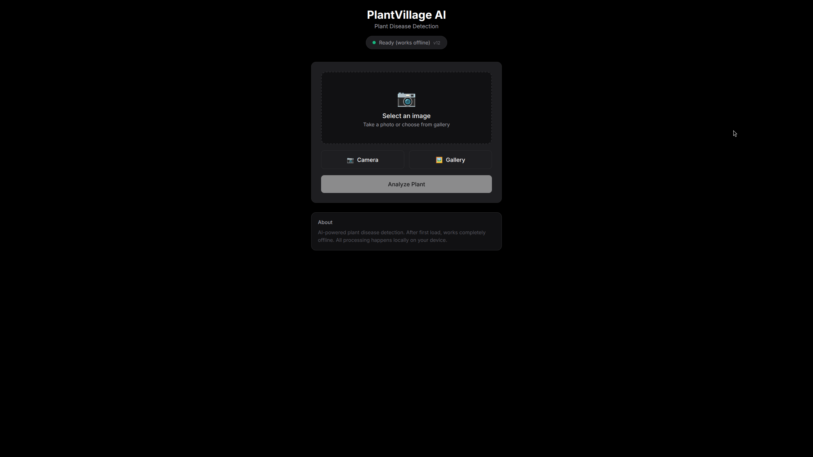

TL;DR - Key Results
| Metric | Value |
|---|---|
| Deployment Size | 24MB (vs 7.1GB PyTorch) |
| Inference Latency | 0.39ms (p50: 0.38ms, p99: 0.45ms) |
| Throughput | 2,579 FPS on RTX 3060 |
| Model Size | 5.7MB weights |
| Classes | 38 plant diseases |
| Training Data | 30% labeled (SSL) |
| Target Platforms | Browser (WASM), iPhone 12 (Tauri), Desktop |
This is a technical breakdown of how I built an end-to-end ML pipeline entirely in Rust using the Burn framework, deployed it to my iPhone 12 via Tauri, and achieved inference times that make PyTorch look like it's running on a potato.
The Problem: Edge AI Without the Cloud
The use case: plant disease detection for farmers in areas with zero internet connectivity. Current solutions require either sending samples to a lab (3-day turnaround) or expensive cloud inference (requires connectivity). Neither works in a field in rural Portugal.
Requirements were brutal:
- Must work 100% offline
- Must run on devices farmers already own (phones, laptops)
- No installation complexity (farmers are not sysadmins)
- Sub-second inference for real-time feedback
Why Rust? The Burn Framework Decision
I chose Rust and Burn for three reasons:
1. Deployment Size
A PyTorch deployment requires ~7.1GB of dependencies. Burn compiles to a single binary. My entire model + runtime comes in at 24MB. That's a 300x reduction.
2. Multi-Platform from One Codebase
Burn compiles to:
-
wgpubackend for native GPU (Vulkan/Metal/DX12) ndarrayfor CPU fallback- WASM for browser deployment
- Native binaries for Tauri mobile apps
Same model code, same weights, multiple targets. No Python anywhere in production.
3. Startup Time
PyTorch cold start: ~3 seconds. Burn: instant (<100ms). For a mobile app, this is the difference between usable and frustrating.
Benchmark Results
I ran standardized benchmarks across three hardware configurations. All tests: 100 iterations, 10 warmup, batch size 1, 128x128 input images.
Burn (Rust) - CUDA Backend
| Model Version | Mean (ms) | p50 (ms) | p99 (ms) | Throughput |
|---|---|---|---|---|
| Baseline | 0.39 | 0.38 | 0.46 | 2,559 FPS |
| SSL | 0.42 | 0.41 | 0.53 | 2,357 FPS |
| SSL Optimized | 0.39 | 0.38 | 0.45 | 2,579 FPS |
Hardware Comparison
| Device | Latency | Throughput | Cost |
|---|---|---|---|
| Laptop (RTX 3060) | 0.39ms | 2,579 FPS | €0 (BYOD) |
| Jetson Orin Nano | ~120ms | ~8 FPS | €350 |
| iPhone 12 (Tauri/WASM) | ~80ms | ~12 FPS | €0 (BYOD) |
| CPU Only | ~250ms | ~4 FPS | €0 |
The Jetson numbers killed our original plan. €350 hardware that's 8x slower than a phone? We pivoted hard to BYOD (Bring Your Own Device).

Model Architecture
CNN with 4 convolutional blocks, implemented entirely in Burn:
// Simplified architecture in Burn
Conv2d(3, 32, 3x3) → BatchNorm → ReLU → MaxPool(2x2)
Conv2d(32, 64, 3x3) → BatchNorm → ReLU → MaxPool(2x2)
Conv2d(64, 128, 3x3) → BatchNorm → ReLU → MaxPool(2x2)
Conv2d(128, 256, 3x3) → BatchNorm → ReLU → MaxPool(2x2)
GlobalAvgPool → Linear(256, 256) → ReLU → Linear(256, 38)Input: 128x128 RGB. Output: 38 disease classes from PlantVillage dataset.
The Burn model definition is clean and type-safe:
#[derive(Module, Debug)]
pub struct PlantClassifier<B: Backend> {
conv1: Conv2d<B>,
bn1: BatchNorm<B, 2>,
conv2: Conv2d<B>,
bn2: BatchNorm<B, 2>,
conv3: Conv2d<B>,
bn3: BatchNorm<B, 2>,
conv4: Conv2d<B>,
bn4: BatchNorm<B, 2>,
fc1: Linear<B>,
fc2: Linear<B>,
}Semi-Supervised Learning Pipeline
Labeled agricultural data is expensive. Expert annotation costs ~€2 per image. For 50,000 images, that's €100k we don't have.
Solution: SSL with pseudo-labeling.
- Train on 30% labeled data
- Run inference on remaining 70%
- Accept predictions with >90% confidence as labels
- Retrain with expanded dataset
- Repeat until convergence
Result: Accuracy comparable to 60% fully-labeled training. We effectively tripled our labeled data for free.
Deployment: Rust All the Way Down
This is where it gets fun. The entire deployment pipeline is Rust:
Desktop GUI
Native app using eframe (Rust
immediate-mode GUI). Same Burn model, native GPU
acceleration.
Browser (PWA)
Export pipeline: Burn → JSON weights → PyTorch (for ONNX export only) → ONNX → ONNX Runtime Web.
The PWA runs entirely offline via Service Worker. First load caches the 5.7MB model, then it's airplane-mode ready.
iPhone 12 (Tauri)
This is the crown jewel. Tauri lets you build native mobile apps with a Rust backend. The ML inference runs in Rust, the UI is web-based.
Deployment to my iPhone 12:
cargo tauri ios build
# Deploy via Xcode or TestFlight80ms inference on the A14 chip. Not as fast as desktop GPU, but plenty fast for real-time use. And it's running Rust on an iPhone.
Lessons Learned
- Burn is production-ready. The API is clean, the backends are solid, and the community is responsive.
- WASM performance is surprisingly good. 80ms on mobile Safari is usable.
- Dedicated edge hardware (Jetson) is often overkill. Consumer devices are fast enough for most inference tasks.
- Rust's compile times are... Rust's compile times. Plan for 5+ minute release builds.
- Tauri mobile is the future. One codebase, native performance, actual Rust on iOS/Android.
Conclusion
What started as "can we run ML on a farm?" became a full exploration of Rust's ML ecosystem. The answer is yes—and it's faster and smaller than Python.
Key numbers:
- 24MB deployment (300x smaller than PyTorch)
- 0.39ms inference / 2,579 FPS on desktop GPU
- 80ms inference on iPhone 12 via Tauri
- €350 hardware cost → €0 (BYOD)
- 38 disease classes, 30% labeled training data
Rust + Burn is a legitimate ML stack. Not for training transformers, but for edge inference? It's hard to beat.